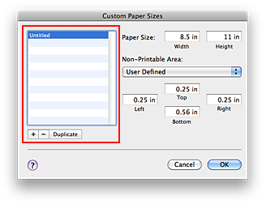

The procedure for specifying a custom size is as follows:
If you are using Mac OS X v.10.6.x or Mac OS X v.10.5.x
-
Creating a new custom paper size
In the Print Dialog, select Manage Custom Sizes... from Paper Size.
In the Custom Paper Sizes (Custom Page Sizes) dialog, click +.Untitled will be added to the list.
-
Setting details about the custom paper size
Double-click Untitled, enter the name of the paper size you want to register, and specify the Width and Height of the paper for Paper Size (Page Size).
Select User Defined (User defined) or your model for Non-Printable Area (Printer Margins), and enter the margins. -
Registering the custom paper size
Click OK.
The custom size is registered.
If you are using Mac OS X v.10.4.11
-
Create a new custom paper size
In the Page Setup Dialog, look under Paper Size and select Manage Custom Sizes....
At the Custom Page Sizes dialog, click +.Untitled will be newly added on the list.
-
Set details about the custom paper size
Double-click Untitled, enter the name of the paper size you want to register, and specify the Width and Height of the paper for Page Size.
Select User defined or your model for Printer Margins, and enter the margins. -
Register the custom paper size
Click OK.
The custom size is registered.
 Important
Important
-
When the application software that created the document has a function for specifying the height and width values, use the application software to set the values. When the application software does not have such a function or if the document does not print correctly, use the printer driver to set the values.
 Note
Note
-
To duplicate the registered paper size, select the paper size you want to duplicate from the list and click Duplicate.
-
To delete a registered paper size, select the paper size you want to delete from the list, and click -.